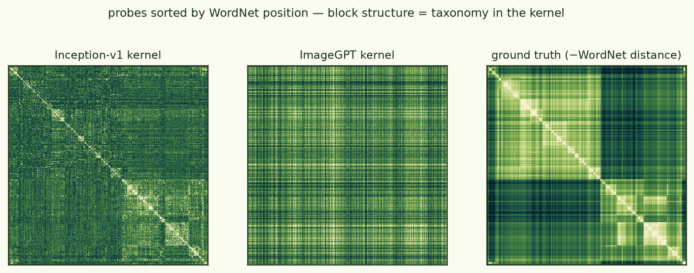
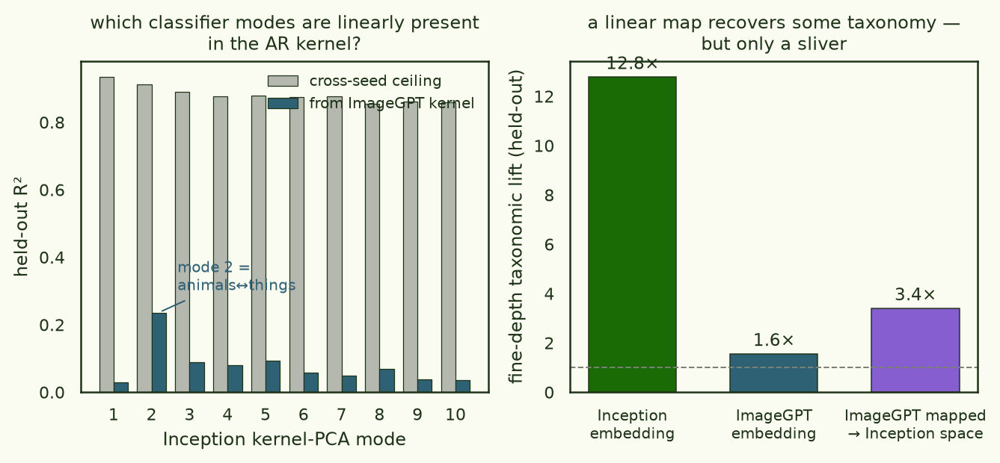
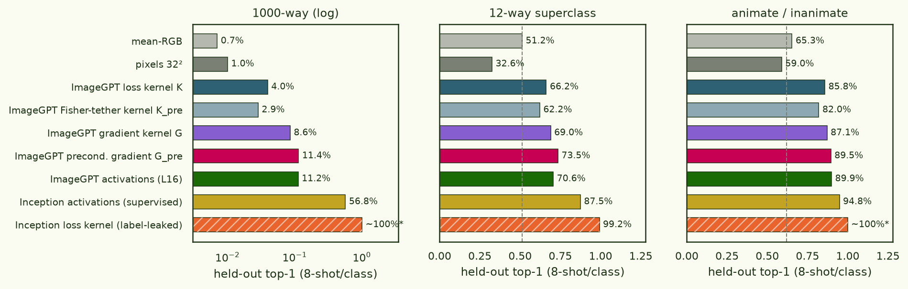
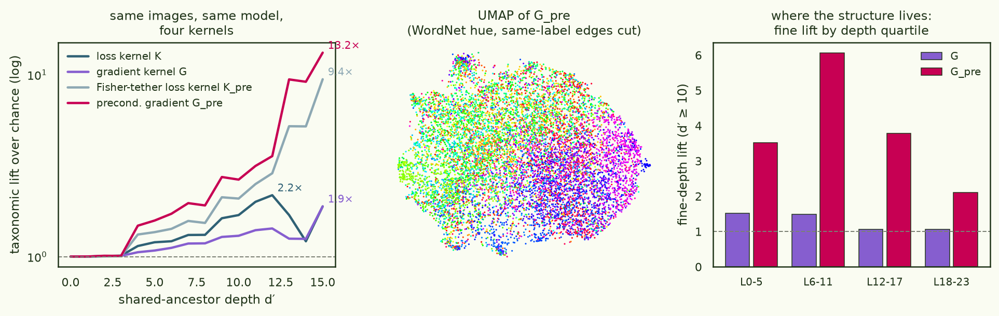

The ImageNet loss kernel, reproduced — and then taken apart
Timaeus' loss-kernel paper closes with its flagship application: compute the of Inception-v1 over 10,000 ImageNet validation images, UMAP it, and watch the WordNet taxonomy appear — an animals↔things split, a dog island, coherent bird / insect / instrument neighbourhoods. The claim: the kernel reveals the structure of the data as the network sees it. But Inception-v1 is a classifier. Its per-sample loss is CE(f(x), y) — a function of the label — and the paper's own Appendix B concedes the sharp version of the problem: run on an untrained network and you can still recover the input labels perfectly from the loss kernel, because noise in the classifier head moves same-label losses together. Their mitigation is cosmetic — same-label edges are deleted inside UMAP's neighbour search — and cross-label correlations inherited from the 1000-way head's geometry (nearby class vectors co-move under weight noise) are exactly the kind of "taxonomy" the paper wants to attribute to perception. So: reproduce the result, then recompute the identical kernel for a model whose loss has never seen a label, on the identical images.
The classifier result reproduces cleanly (taxonomic lift ≈ 200×, gate 0.68). Swap the loss for a label-free one and the taxonomy collapses to 2–4× — while the kernel itself gets more reproducible (gate 0.94). The WordNet geometry is mostly the label channel, not the picture. And an addendum with the knife in: the loss kernel turns out to be a lossy linear shadow of the exact gradient kernel — precondition that and the semantics the loss kernel misses come back. Re-sample the loss kernel itself in the corrected metric and it agrees: what it recovers is the preconditioned gradient kernel, noisily, at ~100× the cost.
§1 The reproduction
Setup follows their Table 1 exactly: probe posterior p(w|D) ∝ exp(−βLn(w)) · N(w|w*, γ−1I), sampled with SGLD at m=256, C=15 chains, T=500 draws, b=100 burn-in, ε=5·10−5, ; SGLD minibatches from the full 1.28M-image train split; per-sample losses over 10k fixed validation probes recorded at every retained draw; images at 256×256 as the paper specifies. Their checkpoint is unreleased (they trained their own), so we use torchvision googlenet (top-1 sanity: 70.0%) with BatchNorm in eval mode — deviations documented in the repo. Readout precision was chosen by a measured fluctuation A/B per model: bf16 readout noise swamps Inception's fluctuations (r=0.83 vs fp32 → fp32), but is fine for ImageGPT at the posterior's own scale (r=0.978 → bf16). Two independent seeds; the comes out at 0.68 (paper's pooled estimator) / 0.71 (this thread's block-centred one), and the two estimators agree — chains mix well at 6.6M parameters.

Every qualitative claim of theirs checks out on our independent pipeline: the UMAP islands (dogs, birds, primates, vehicles), interpretable nearest neighbours (totem poles retrieve totem poles; terriers retrieve terriers), block structure aligned with WordNet when the kernel is sorted by taxonomy, and near-unit colour lift at high γ. The quantitative summary is : kernel-neighbours of a deep-class image share fine WordNet ancestors up to ≈200× more often than chance.

§2 How big is the label channel?
Before swapping models, measure the artifact the paper acknowledges but doesn't quantify. In Inception's kernel, same-label pairs have mean correlation 0.42 against 0.02 for cross-label pairs; 32.6% of every image's top-30 kernel neighbours share its exact label, against a 0.098% base rate — a 332× same-label lift. And the that the paper applies inside UMAP turns out to be doing real work in the lift metric too: recompute lift without it and Inception's peak rises from 200× to 333× — numerically converging to the same-label lift itself, because at deep ancestor depths the neighbour lists are dominated by exact-class retrieval. The label-free model barely moves under the same ablation (pooled peak 2.2× → 2.6×; per-query-depth peak 2.3× → 4.3×): there is no label channel to let back in.

§3 The label-free transfer
The counterfactual model is ImageGPT-small (iGPT-S, 76M params): an
autoregressive pixel-token model over 32×32 images, pretrained on ILSVRC-2012
without labels. Its per-image loss is the mean next-token NLL of 1024
pixel-tokens — no label anywhere in the loss. Per this thread's design rules the
embedding/unembedding (wte, wpe, lm_head) are
frozen during SGLD, removing the head-noise channel entirely. Same SGLD configuration,
same two-seed protocol, and the same 10,000 probe images, tokenised with the
model's fixed 512-colour palette. (One fleet note: the readout costs ~10 s/draw — 207
GFLOPs per probe at sequence length 1024 — so the 15,000-draw grid was sharded one chain
per GPU across 22 H100s and merged, after verifying shard-merge equivalence on synthetic
traces.)
| Inception-v1 (classifier) | ImageGPT-small (label-free) | |
|---|---|---|
| taxonomic lift, peak | ≈200× | 2.3× (block: 3.8×) |
| coarse lift (d′ 2–6) | 2.29 | 1.12 |
| fine lift (d′ ≥ 10) | 40.6 | 1.75 |
| same-label lift in top-30 | 332× | 2.7× |
| colour lift | 1.16 | 1.23 |
| 2-seed gate | 0.68 | 0.94 |
| kernel↔kernel | 0.048 (off-diag Pearson 0.025) | |
Two orders of magnitude of taxonomy vanish when the label leaves the loss — and it is not because the label-free kernel is noisy. Its per-seed split-half agreement is 0.95 and the cross-seed gate is 0.94, far above the classifier's 0.68: the weak structure it has is highly reproducible. What survives is a coarse animate↔inanimate gradient (visible in Fig 1 right; block-estimator lift peaks 3.8× at mid depths) plus a colour factor — exactly the organisation this thread has found in every generative-model kernel from CIFAR to RandAR.
§4 Present but not prominent? A linear map says no
A fair objection: nearest-neighbour metrics only see a kernel's dominant modes. Maybe the classifier-relevant directions exist in the AR kernel's spectrum but are outranked by its big common modes (its top-10 modes hold 42% of the variance, vs 15% for Inception). So: both kernels (top 256 modes), and ridge-map the AR embedding onto the classifier embedding on 8k probes, scoring held-out R² on 2k. The answer is a clean no. The map recovers R² = 0.0195 against a cross-seed noise ceiling of 0.53 — 3.7% of the explainable classifier geometry — and whitening the AR modes (which erases prominence entirely) changes nothing (0.0186). The one direction that does transfer is Inception's mode 2 — the animals↔things axis — at 24% of its explainable variance; every other mode sits below 0.1. Functionally, measuring held-out taxonomic lift in the mapped geometry recovers 2.9× → 7.0× at the peak: a real, purely-linear read of the AR kernel roughly triples its taxonomy, and still lands ~8× short of the classifier.

§5 Kernels as classifiers
The operational version of "how much class structure does the kernel contain": build classifiers from it. on the Gram matrix, kNN votes, and logistic probes on kernel-PCA coordinates, all on a fixed 80/20 probe split (8 labelled examples per class), against embedding baselines under the identical protocol — including the canonical one, since classification from activations was the iGPT paper's own headline result (41.9% for iGPT-S with full-data probes).

| representation | 1000-way | 12-way | 2-way |
|---|---|---|---|
| mean-RGB | 0.7% | 51.2% | 65.3% |
| pixels 32² | 1.0% | 32.6% | 59.0% |
| ImageGPT loss kernel (ridge) | 4.0% | 66.2% | 85.8% |
| ImageGPT Fisher-tether kernel Kpre (§6b) | 2.9% | 62.2% | 82.0% |
| ImageGPT gradient kernel G (§6) | 8.6% | 69.0% | 87.1% |
| ImageGPT precond. gradient Gpre (§6) | 11.4% | 73.5% | 89.5% |
| ImageGPT activations (layer 16) | 11.2% | 70.6% | 89.9% |
| Inception activations (supervised) | 56.8% | 87.5% | 94.8% |
| Inception loss kernel | ~100%† | 99.2%† | ~100%† |
Three readings. First, the label-free loss kernel is a genuine unsupervised representation: 40× chance at 1000-way, 4× pixels, and at coarse granularity it nearly matches the model's own activations. Second, the fine-grained class structure the model demonstrably has (11.2% few-shot from its layer-16 features — the same mid-layer sweet spot the iGPT paper found — 41.9% with full-data probes) is mostly not expressed in its loss geometry: the kernel is a coarse, lossy projection of the representation. Third, the † row: a supervised-loss kernel's test-image features are computed from CE(f(x), y) — the test label enters its own features, so the ~100% is leakage, not accuracy. That is the confound of §2 in its most operational form.
§6 Addendum: the exact gradient kernel, and what the loss kernel loses
A sibling result forced one more experiment. In the ARCH training-prediction run, the exact G — raw per-example gradient inner products at the trained weights, no sampling — predicted fine-tuning-induced loss changes 2–3× better than the SGLD loss kernel, and its variant Gpre better still. Theory says these objects are family: to leading order the loss kernel is the dampened influence function giT(H+γI)−1gj (arXiv:2509.26544) — a curvature-filtered gradient Gram. So: compute G exactly for ImageGPT on the same 10k probes (the classifier is already label-saturated and needs no help) and ask which structure lives where. One fp32 backward per image, each 75.7M-dim gradient unit-normalised into an fp16 row of a 1.5 TB store, Gram by striped GEMM across 8×H100 in ~75 min, assembled kernel verified against freshly recomputed fp32 gradients to 1.2·10⁻³. No sketching, no projection.

Three findings. First, the loss kernel is a lossy shadow of G. Ridge-mapping G's kernel-PCA embedding onto the loss kernel's recovers R² 0.63 against that kernel's own cross-seed ceiling of 0.69 — 91% of the explainable loss-kernel geometry is linearly contained in the gradient Gram (CKA 0.79). Sampling the tethered posterior mostly re-measures gradient geometry through a fixed curvature filter; the Laplace picture, verified at ImageNet scale.
Second, the metric was hiding the semantics. Raw G's neighbourhoods are worse than K's (fine lift 1.27 vs 1.75), and no rank-256 whitening of the kernel fixes it (§4's trick fails here too: R² 0.009→0.011). But rescale the gradients in parameter space — divide by √E[g²], the geometry Adam actually trained in — and everything sharpens at once: few-shot 1000-way accuracy triples to 11.4%, matching the model's best activation probe (11.2%, L16); fine-depth lift goes 1.75→4.9 with the peak moving from coarse (8,8) to the deepest WordNet levels (16,15); kNN class votes improve 10×; and the linearly-recoverable share of the classifier kernel doubles (3.7%→7.1% of ceiling). No post-hoc transformation of a kernel can do this — Gpre is a different quadratic form on function space. The Fisher-kernel literature called it (GAN gradient features beat GAN activations, arXiv:2202.01944); it holds for the loss kernel's own gradients too.
Third, the label channel stays missing — Gpre reaches CKA 0.16 with the classifier kernel and 7% of its explainable variance, sharpening the §3 verdict rather than overturning it. One more contrast with the sibling run: the LM gradient Gram there was rank-1-dominated (λ₁ = 84% of trace); the iGPT cosine G is genuinely high-rank (λ₁ = 8.6%, 1059 modes for 90% of trace; Gpre flatter still). Image-model gradient geometry at the pretrained point has no single groove to collapse into.
§6b The rebuttal experiment: precondition K itself
Fair challenge before writing the loss kernel off: maybe it wasn't lossy — maybe it was sampled in the wrong metric. There's only one meaningful way to test that. A correctly preconditioned sampler provably leaves K unchanged (pSGLD changes mixing, not the target), so the metric must go into the target: replace the paper's isotropic tether γ‖w−w*‖² with the γ(w−w*)ᵀdiag(1/q)(w−w*), q built from the same E[g²] as Gpre. Linearised, this posterior's loss kernel is Gpre — so re-running the full SGLD pipeline (identical 15 chains × 2 seeds × 500 draws; a 3-line change to the update) measures exactly whether the sampled, nonlinear, finite-temperature kernel adds anything beyond its linearisation.
Result: the metric was the failure — and the sampler adds nothing but noise. Kpre finds the semantics K missed (fine lift 1.75→3.23, peak relocated to the deepest WordNet levels, kNN class votes ×6, CKA to Gpre 0.21→0.685 — the gold curve in Fig 6). But its reproducibility collapses (gate 0.937→0.28: the Fisher metric suppresses exactly the loud common-mode directions that made K stable), and the attenuation algebra closes the case: a gate of 0.28 caps any noise-free target's agreement with the 2-seed ensemble at 0.661, and Gpre hits 0.652 — 98.6% of the ceiling. Sharpest form: ridge-mapping embeddings, Gpre predicts a Kpre seed (R² 0.51) better than the other Kpre seed does (R² 0.13). The infinite-sample Kpre is statistically indistinguishable from Gpre: thirty GPU-hours of Langevin sampling produced a noisy Monte-Carlo estimate of a matrix one GEMM over the gradient store computes exactly. (The noise has teeth, too: 1000-way kernel-ridge drops below isotropic K, 0.025 vs 0.040, even as robust local kNN improves 6× — global solvers amplify estimator noise. Contrast the isotropic pair: K's ensemble ceiling is 0.98 but it agrees with raw G at only 0.49 — there the curvature filter genuinely reshapes the kernel; under the Fisher tether, the linearisation is the whole story.)
§7 What this does and doesn't show
The reproduction stands: on a classifier, the loss kernel really does organise ImageNet along WordNet lines, robustly across our independent checkpoint and pipeline. What does not survive scrutiny is the reading that this geometry belongs to "the data as seen by a trained network". Remove the label from the loss and — on identical images, under an identical probe posterior, with better chain statistics — the kernel keeps a single reproducible animacy axis, a colour factor, and essentially nothing finer (CKA 0.05 to the classifier kernel; 3.7% of its explainable geometry linearly present). The taxonomy predominantly rides on the supervised loss: the label input directly, and the 1000-way head geometry it trains.
The §6 addendum sharpens the diagnosis into a method point: "the loss landscape's grooves" under-report what even gradient geometry knows about the data. The loss kernel is a curvature-filtered compression of G that happens to discard most of the semantics; correct the parameter-space metric first and the same gradients match the best activation probe. And §6b closes the loop in both directions: the loss-covariance instrument is redeemed in principle — sampled under the right prior geometry, it does see the taxonomy — and retired in practice, because what it sees is Gpre plus Monte-Carlo noise, at ~100× the compute of the GEMM that computes Gpre exactly (and estimating the metric requires the gradients anyway). If you want a label-free geometric fingerprint of a model, the interesting object is the metric-corrected gradient kernel, not the loss covariance.
Caveats, honestly held: ImageGPT sees 32×32 inputs, so some fine-structure collapse is resolution, not labels — though the near-total loss of even coarse lift (2.29 → 1.12) and of same-label structure (a 32×32-visible signal, had it existed) says resolution is not the main story, and the activation probes prove the model itself holds far more class structure than its kernel shows. Gpre's preconditioner is a LESS-style proxy (E[g²] over 64 train minibatches at w*), not the optimiser's actual second-moment state. The clean follow-ups: a resolution-matched label-free model (LlamaGen-B, null-conditioned, at 256²), a class-conditional AR model probed with true vs null labels as a dose–response on the label channel, and D-TRAK-style output-function ablations of G (mean-NLL may not be the most structured scalar). Model scale (76M vs 6.6M) is unmatched in the other direction; nothing smaller exists label-free at any resolution.
- models
- torchvision googlenet IMAGENET1K_V1 (6.6M SGLD params, aux frozen, BN eval) · openai/imagegpt-small (75.6M sampled; wte/wpe/lm_head frozen; flash-SDPA patch ≡ eager to 4·10⁻⁵)
- probes
- 10,000 seed-fixed ImageNet val images @256² (benjamin-paine/imagenet-1k-256x256), identical for both models; iGPT side tokenised to 32² × 512-colour palette (96.3% agreement with HF processor)
- SGLD
- m=256 · C=15 · T=500 · b=100 · ε=5e-5 · nβ=20 · γ=4000 · 2 seeds · readout fp32 (inception) / bf16 (igpt, posterior-scale A/B r=0.978)
- estimators
- paper pooled covariance + block-centred (block=50); agreement throughout; raw traces on HF
- fleet
- phase 1: 1× H100, ~2.1 h/seed · phase 2: 30 chains sharded 1/GPU over 22 H100s (6 singles + 2× 8-GPU), ~95 min/chain, merged after concat-equivalence check
- gates
- inception 0.683 / 0.713 · igpt 0.937 / 0.944 (pooled / block); igpt split-half 0.95 per seed
- gradient kernels
- exact G + G_pre at pretrained w*: 10k fp32 backwards (mean-token NLL, non-embed params), unit-row fp16 store 1.5 TB, striped GEMM 8×H100 ~75 min/kernel; assembled-vs-recomputed max dev 1.2e-3, independent-halves asymmetry ≤ 1.1e-4; per-layer-group partial Grams for free; G_pre preconditioner = mean-normalised (E[g²]+1e-8)^-1/2 over 64 train minibatches
- K_pre
- Fisher-tether SGLD: w ← w − (lr/2)(nβ·q⊙ĝ + γ(w−w*)) + √(lr)·√q⊙ξ, q = s²/mean(s²) (same inv_sqrt_v as G_pre, recomputed to 9-digit agreement); identical hyperparameters to K; pilot ‖w−w*‖ 141 = isotropic; 30 chains, 2× 8×H100 ~2.5 h; gate 0.280; reproduction spec in
KPRE_SPEC.md
latent-learning branch imagenet-reproduction —
experiments/imagenet_kernel/ (runners, WordNet ground truth, lift/UMAP/spectral/classifier
analyses, shard-merge, 16 CPU tests; full narrative in RESULTS.md).
Reproduction target: Adam, Furman & Hoogland,
"The Loss Kernel" (arXiv:2509.26537), §4 + App. B/D;
activations baseline per Chen et al.,
"Generative Pretraining from Pixels".
Artefacts · HF arcadia-impact/imagenet-loss-kernel-logs (
imagenet-kernel-20260708/) — SGLD traces (all 60 chain-seeds), loss kernels,
exact gradient kernels + layer-group Grams (igpt_grad*/), probe metadata,
activation features, every analysis in this page, ledgers with git SHAs + pod IDs.
Compute · ≈ 140 H100-hours + change across 14 pods ≈ $427 total; all pods deleted, results verified on HF before teardown. Gradient-kernel conventions follow the ARCH run's
tp_gram.py (mean-token loss, non-embedding params, single checkpoint, raw dots);
K_pre sampling spec in KPRE_SPEC.md (repo + HF).